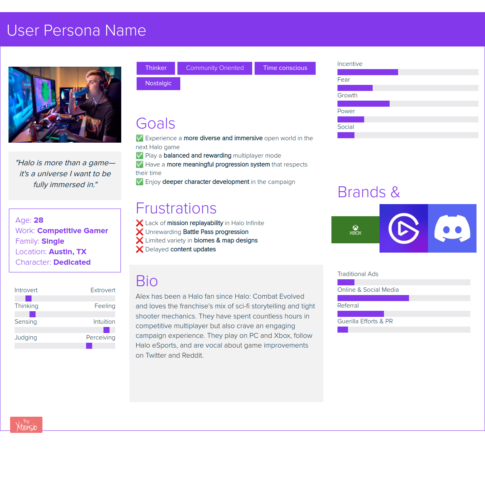
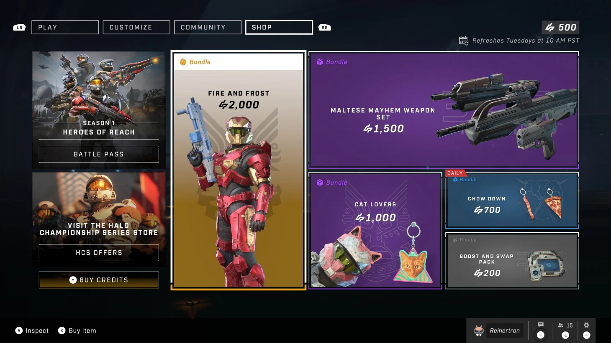
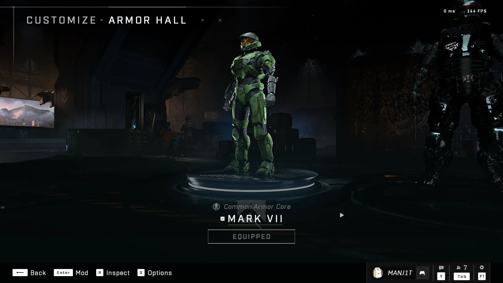

.png)

Project Information
- Category: Video Game Design
- Client: Halo Studios
- Project date: FEB, 2025
Halo Infinte Requiem
The UI for a Halo Infinite sequel, Halo Infinite: Requiem.
Case Study:
Halo Infinite: Requiem — Game UI/UX Redesign
Reimagining the Halo Player Experience
An independent game UX/UI concept for a hypothetical sequel to Halo Infinite, exploring how clearer menu navigation, meaningful progression feedback, and cohesive science-fiction visuals could make campaign, multiplayer, and customization features easier to discover.
Developed over two weeks, Requiem explores a player-centered interface that respects Halo's established identity while bringing consistency to its interconnected game systems.
.png)
Project Overview
- Project Name: Halo Infinite: Requiem — Hypothetical Sequel
- Project Type: Independent Game UX/UI Design Concept
- Role: UX/UI Designer (Solo Designer)
- Tools Used: Figma, Adobe Photoshop, Adobe Illustrator, Game UI Database, Dribbble, Behance
- Timeline: 2 Weeks
- Project Scope: Main menu, progression, community file sharing, matchmaking, store, and Spartan customization
- Target Player: Halo players seeking accessible campaign features, competitive multiplayer, clear progression, and meaningful customization
- Objective: Reimagine the user interface for a hypothetical Halo Infinite sequel, focusing on intuitive menu navigation, improved information hierarchy, consistent visual design, and a more immersive player experience.
Value Added
Halo Infinite: Requiem explores how a refined interface could enhance the Halo experience while preserving the franchise's recognizable visual identity. Through clearer navigation, organized content, and cohesive UI components, this concept aims to make essential game features easier to discover and navigate across the player experience.
The Challenge
Problem Statement
Halo Infinite introduced a modern foundation for the franchise, but aspects of its interface and player experience have also generated criticism surrounding navigation, progression, and customization. These challenges present an opportunity to explore how a hypothetical sequel could offer clearer information architecture, more intuitive interactions, and a more cohesive visual experience while preserving Halo's established identity.
Key UX/UI Challenges Identified
- Campaign Accessibility: Making mission selection, replay options, and campaign progress easier to discover and navigate.
- Progression Clarity: Presenting Battle Pass rewards, unlock requirements, and player progression through clearer information hierarchy and more understandable feedback.
- Navigation & Visual Hierarchy: Reducing unnecessary complexity by organizing menus, improving content prioritization, and establishing consistent interface patterns.
- Customization Usability: Streamlining access to Spartan customization, cosmetic unlocks, and personalization options through more intuitive menu structures.
Why Explore a Hypothetical Sequel?
- Envision a modernized Halo interface that respects the franchise's visual identity while applying contemporary game UX/UI principles.
- Explore clearer navigation across campaign selection, multiplayer features, progression, and customization.
- Balance Halo's cinematic science-fiction atmosphere with accessibility, usability, and player-centered design.
Research & Discovery
The research phase combined a scenario-based player persona with a competitive analysis of modern shooters to establish priorities for navigation, progression, multiplayer, and customization.
Research Snapshot
Player
Alex, a 28-year-old dedicated Halo veteran, values competitive multiplayer, meaningful progression, immersive storytelling, and community engagement.
Problem
Frustrations with Battle Pass progression, mission replay accessibility, limited environmental variety, and delayed content updates can diminish Alex's overall experience.
Design Opportunity
Explore a more intuitive interface that improves progression visibility, simplifies access to game modes, and supports a cohesive experience across campaign and multiplayer.
Player Persona
Alex represents a dedicated Halo player who values the franchise's science-fiction storytelling, competitive gameplay, and community. This scenario-based persona helps connect player motivations and frustrations to the interface design priorities explored in Requiem.

Key Player Insights
- Respect Players' Time: Alex wants to spend less time searching through menus and more time enjoying campaign and multiplayer.
- Meaningful Progression: Rewards, milestones, and unlock requirements should be understandable at a glance.
- Competitive Multiplayer: Game mode discovery, fireteam management, and community interaction should feel connected.
- Immersive Storytelling: Campaign discovery and replay access should support the larger Halo experience.
Point of View
Alex, a dedicated Halo veteran, needs a unified interface that makes campaign, multiplayer, customization, and progression easy to navigate because he wants his time spent playing to feel rewarding, engaging, and connected.
How Might We?
- How might we make Campaign, Multiplayer, Forge, Custom Games, and Customization easier to locate?
- How might we communicate Battle Pass rewards and progression milestones more clearly?
- How might we improve discovery of community files, playlists, and multiplayer activities?
- How might we preserve Halo's science-fiction identity while strengthening interface readability and consistency?
Competitive Analysis
I compared Rainbow Six Siege, Destiny 2, Call of Duty: Black Ops 6, and Battlefield 2042 to explore how modern shooters approach competitive gameplay, player progression, content updates, and multiplayer engagement. The analysis highlighted opportunities to combine clearer progression systems, accessible multiplayer navigation, and engaging game modes while maintaining Halo's distinctive identity.

From Player Insights to Interface Design
The design process translated Alex's needs and the competitive analysis into a series of connected game interfaces: main menu, community file sharing, matchmaking, store, and Spartan customization.
My Design Process
- Research & Analysis: Defined a player persona and compared modern shooters to identify interface and progression opportunities.
- Information Organization: Prioritized navigation to Campaign, Multiplayer, Forge, Custom Games, and Customization, alongside visible progression and featured content.
- Interface Exploration: Designed screens for community browsing, matchmaking, store discovery, and armor customization.
- Visual Refinement: Improved background integration, color consistency, typography, button visibility, and interface hierarchy across iterations.
Visual Direction
Military-inspired typography, subtle gold accents, cinematic science-fiction backgrounds, and visible controller prompts establish a recognizable Halo-inspired design language. Organized cards and consistent interface patterns help connect otherwise complex game systems.
Wireframes & Design Evolution
The project documents interface concepts and high-fidelity screens rather than a separate set of low-fidelity wireframe images. The following designs show how I organized the game's core systems.
Main Menu & Progression Visibility
The redesigned main menu brings Campaign, Multiplayer, Forge, Custom Games, and Spartan customization into a structured navigation panel. A prominent Battle Pass module displays progression and rank information, while a dedicated news panel highlights featured content. Controller prompts remain visible.
.png)
Community & File Sharing
The community interface organizes player-created content into recommended files, popular maps, custom modes, prefabs, and developer selections. Bookmarks, file browsing, and friends' creations provide additional discovery paths.

Matchmaking & Fireteam Management
The matchmaking interface presents multiplayer playlists alongside a visible fireteam roster. Spartan Rank progression, selected activities, and lobby status provide context before entering a match.

Store & Cosmetic Discovery
The redesigned store uses visual cards for armor sets, currency options, promotional offers, and Spartan Passes. Item imagery, prices, availability indicators, and balances help players distinguish purchasable content from owned items.

Spartan Armor Customization
The Augmentation interface combines armor categories, cosmetic selections, and a large Spartan preview. Equipment slots, cosmetic thumbnails, and ownership indicators connect the available options to the character preview.

High-Fidelity Screens
The main menu and Community File Share screens demonstrate the refined visual language: cinematic backgrounds, structured navigation, clear content groupings, and consistent prompts.
Key Design Decisions
Each interface decision addresses a player need identified in the project while keeping the experience visually connected.
Streamline Navigation
Organize essential features through clear navigation paths and recognizable categories so players spend less time searching.
Clarify Progression
Present milestones, unlock requirements, and rewards through organized information and visual feedback.
Support Competitive Play
Make multiplayer playlists, fireteam details, and community content easier to identify.
Strengthen Visual Hierarchy
Use consistent typography, grouped content, and recognizable controls to reduce unnecessary complexity.
Connect Campaign & Multiplayer
Establish unified navigation across story content, competitive modes, and player customization.
Design Iterations
Between the first and final iterations, I addressed color scheme consistency, weak button visibility, background image integration, and typography. The revisions aimed to strengthen visual flow, hierarchy, and Halo's science-fiction atmosphere.
First Iteration


Final Iteration

Halo Infinite vs. Halo Infinite: Requiem
This comparison explores how my independent concept reimagines the original game's Store and Spartan Customization interfaces, focusing on content organization, visual hierarchy, and customization discoverability while preserving Halo's visual identity.
Original Halo Infinite


Requiem Redesign Concept

- Store: Reorganizes cosmetic bundles, pricing, ownership indicators, and promotional content into more scannable cards.
- Customization: Brings armor categories, selectable cosmetics, equipment slots, and the Spartan preview together in a unified workspace.
Explore the Interactive Prototype
The Figma prototype presents the Requiem interface concept and its proposed menu interactions.
Open Interactive Figma Prototype
This is an independent, hypothetical game interface prototype, not a playable Halo game.
Design Outcomes & Intended Impact
These are intended design benefits of the concept, not measured outcomes from usability testing or a released product.
Clearer Navigation
Makes major game features and multiplayer playlists more visible through organized menus and recognizable categories.
Progression Visibility
Gives Battle Pass information, ranks, and rewards a clearer place in the player interface.
Cohesive Player Experience
Connects community content, matchmaking, store discovery, and Spartan customization through consistent visual patterns.
Reflection & What I Learned
- Designing for Complex Game Systems: Reimagining Halo's progression, matchmaking, and customization interfaces taught me how to organize interconnected features through clearer navigation, consistent layouts, and accessible information without sacrificing the depth players expect.
- Translating Research into Design Decisions: Developing a player persona and comparing Rainbow Six Siege, Destiny 2, Call of Duty: Black Ops 6, and Battlefield 2042 helped me identify opportunities to improve content discovery, progression visibility, and multiplayer navigation while maintaining Halo's unique identity.
- Strengthening Visual Hierarchy and Consistency: Designing interfaces for the main menu, Store, Community File Share, Matchmaking, and Spartan Customization reinforced the importance of recognizable navigation patterns, organized content cards, readable typography, and consistent controller prompts.
- Balancing Franchise Identity with Modern UX: Preserving Halo's military-inspired typography, cinematic backgrounds, and science-fiction aesthetic while exploring more structured interfaces taught me how to modernize an established visual language without losing its recognizable character.
- Designing Around Player Priorities: Considering Alex's goals and frustrations reinforced the importance of respecting players' time, communicating progression clearly, and making frequently used features easier to discover. This project also highlighted the value of future usability testing to validate these design decisions with real players.
Next Steps
Future work could include testing menu discovery with Halo players, evaluating controller navigation, reviewing accessibility, and refining progression and customization flows based on feedback.
Independent, unofficial Halo-inspired UX/UI design concept by Rojas Design Studios. Not affiliated with or endorsed by Halo's creators or publishers.